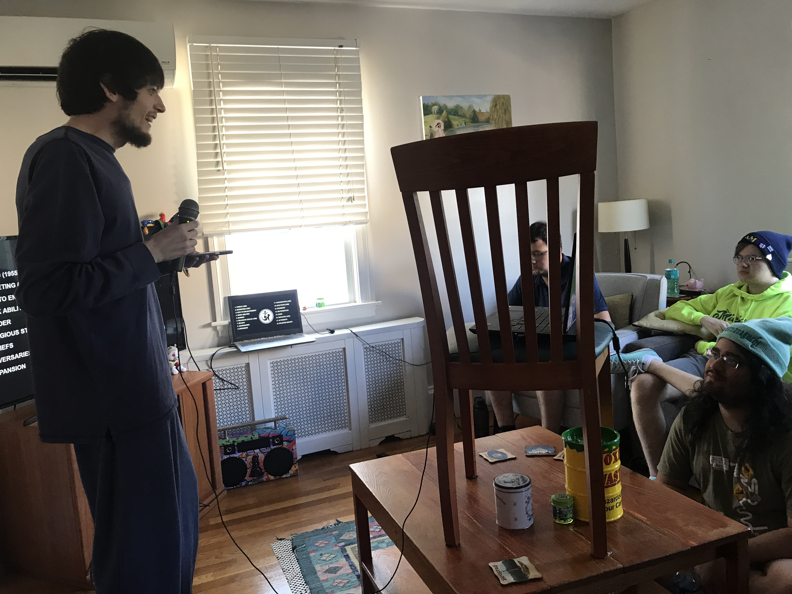
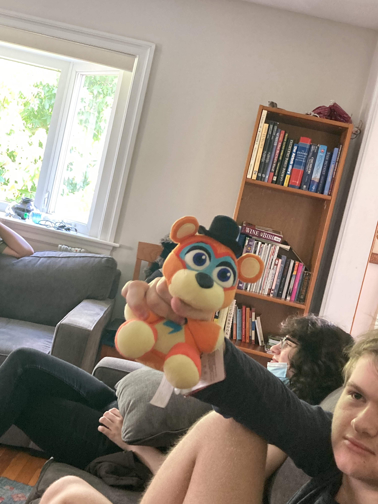
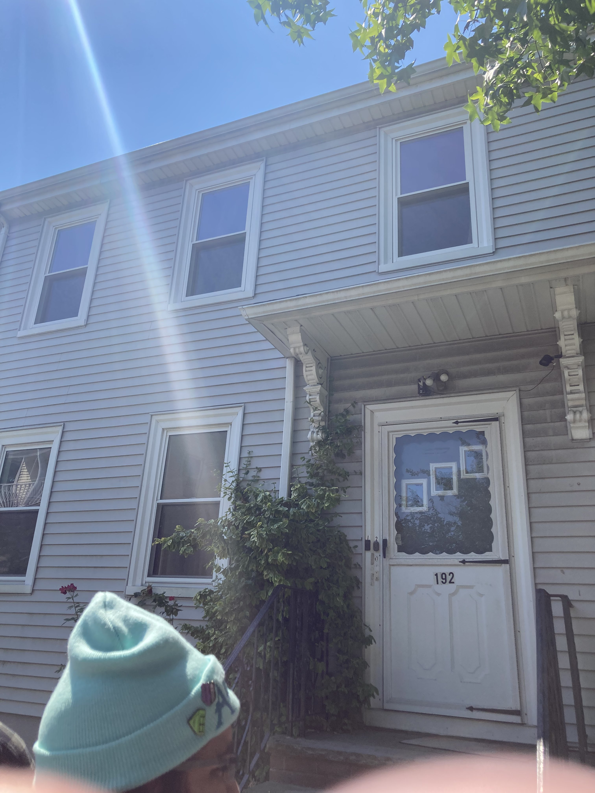
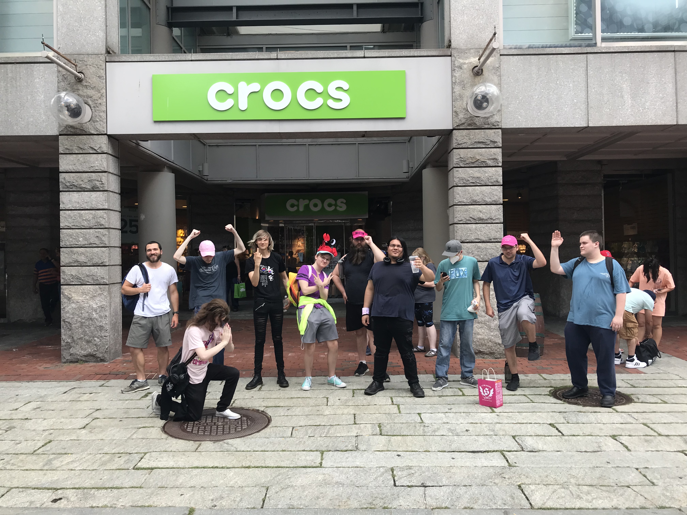

Remembering RFCKcon 7
Today, July 22nd, was the last day of RFCKcon 7 two years ago. It ran from the 19th to the 22nd. It was probably the most joyous 4 continuous days of my life. I loved it. I cherished it. I loved everyone there so dearly and wholly. It was something that could only ever happen then.
RFCK's been a lot for me, as a person. When I joined on March 31st, 2021, it fundamentally changed my life. There is a me pre- and post-RFCK. And, uh, the good times, "the good old days", lasted for about 1.25 years. From when I joined, to right after RFCKcon 2022. It was the demarcation point, really.
I wrote an extremely in-depth and accurate diary while I was there, so I know at any time I can relive it beat by beat. But I'm gonna go off of what I remember, after 2 years, without having reread said diary.
I remember arriving at the airport in Boston, and waiting around in baggage claim to meet up with Stotle. I saw him walking by about 2 minutes before he saw me, and I don't know why I never said hi first. But when we saw each other, we said hi, and then instantly went outside to catch a ride to the subway. His blood sugar was either low or high, so he had to check it a lot. He ordered an uber after a huge wait, didn't know how ubers worked, and then we both hopped on the white line (I think?) bus. We were both packed in that thing, sweating from the heat. We got to the subway, and met up with coonrat in it. We then made our way to a train station, and then did a 15 minute trek to Slimehouse. It was quaint. I was so nervous the entire time - I really looked up to Stotle - but it was so casual, outta nowhere. Meeting all these people I knew online. It was so casual. Enthralling.
I remember running through the Boston suburbs with Goldspin, I think, to catch a Bouffalant in Pokemon Go, late at night. It was a regional Pokemon only around there, so it was my only chance, so. We ran. It was nice.
I remember sleeping on the couch, with Coonrat to my right (also on a couch) and Dema on the floor (after night 1).
I remember waking up to everyone surrounding me, due to me being the last one up, and them remarking that I was wearing noise-canceling headphones. We then went to eat breakfast, on someone I can't remember right now's dime.
I remember being at Faneuil Hall with everyone. Visiting Roxbury Comics, with Ethan and Stotle and others. Playing Real Life Gang Violence. Me and Prince both hiding behind the same barrel, just on opposite sides. I remember nigh-limitless joy. I remember us all chilling that second night.
I remember playing Betrayal at House on the Hill on Day 3 with a whole bunch of people. People in the other room were playing Unrailed. Stotle was talking about Rance. Kip made some bomb-ass dumplings. Ethan, Schrafft, and Ben Saint showed up. Ben brought a bunch of slime bottles, and goodies, and we all did Karaoke. The last song I sang was Guys, by The 1975, after everybody else was done. I didn't finish it, as everyone else was going to bed. I don't know if I regret not finishing it.
I remember leaving, with Kip and M@ and Stotle. M@ wrote the discord invite code, discord.gg/mtSRXek, on the underside of the stairwell. We were the last ones out of Slimehouse, and all trekked to a subway station together. I made a wrong turn on accident while guiding, and I don't remember whether I told them. I'm pretty sure M@ was the first to depart, on a train. Then Stotle and Kip and I all took the bus to the airport. Stotle hopped off first. Kip and I were at gates at the same terminal, so we hopped off at the same place and went through security together. We ate some food together, I don't remember what, and then I saw Kip off at their gate - my flight left later than theirs - and. I remember they said it was an average time. And I was shocked! Because it was the best I'd ever had. And then I sat at my gate once I'd waved them off.
I'm so thankful to everyone there, forever. We all ended up going our separate ways, and I've had fallings-out with a few of them. A beautiful moment in time.


Two group photos in the Slimehouse. One during the 3rd evening, the other during Stotle's lecture.


Me holding up the Rockstar Freddy plush I bought at Roxbury Comics, and then the exterior of the Slimehouse.

The group photo near Faneuil Hall during day 2, sans Kip, M@, Ethan, Ben, and Schrafft, iirc.